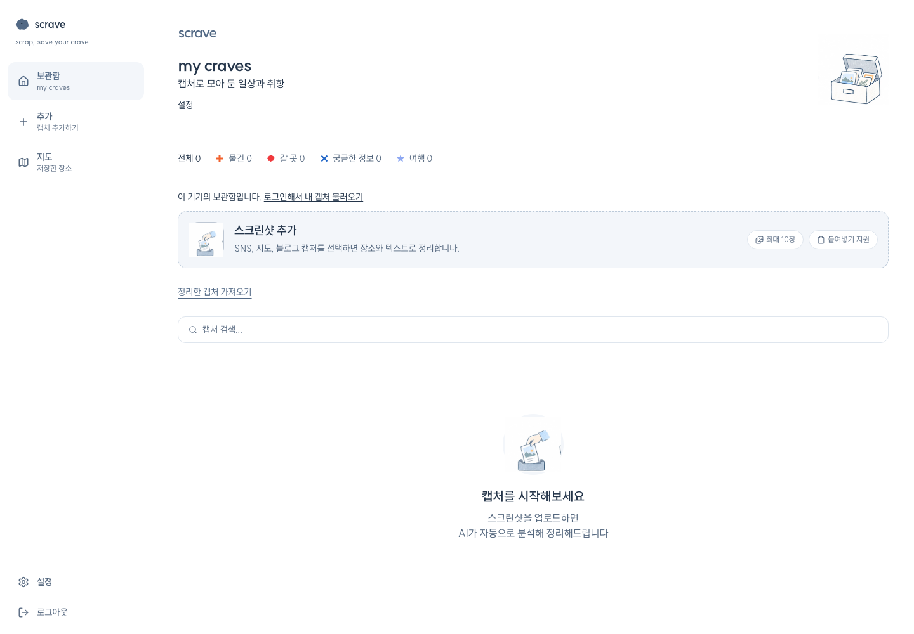
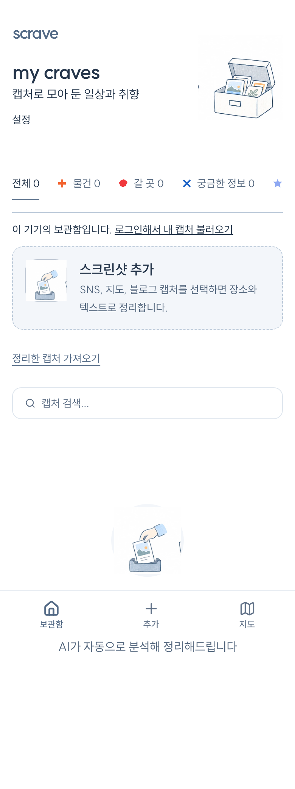

웹 보관함과 설치형 웹앱
게스트 체험, 로그인, 단일·배치 업로드, 분석, 저장, 삭제, 검색, 반응형 레이아웃이 연결돼 있습니다.
Playwright 01–06 · manifest · dashboard
Scrave는 웹·모바일·설치형 웹앱·앱인토스 시제품까지 구현돼 있습니다. 지금 필요한 일은 새 껍데기를 만드는 것이 아니라, 실제 계정·실기기·오프라인·출시 조건의 빈틈을 증거로 닫는 일입니다.
게스트와 로그인 사용자 모두에서 저장부터 재발견까지 브라우저 자동 여정이 이어집니다. 각 단계는 단위 테스트만이 아니라 실제 화면 조작으로 다시 확인했습니다.
이미지 한 장·여러 장, 붙여넣기, 비지원 파일 차단
브라우저 통과장소·텍스트 분류, 결과 확인, 자동 저장과 실패 처리
모킹 여정 통과원본 유지, 계정 저장, 기기 보관함, 삭제와 한도
코드·여정 통과검색·카테고리·시간·연관성·같은 분류 넘기기
자동 테스트 통과지도·후기·출처·행동·가이드·공개 공유
브라우저 통과100종 스티커, 이동·크기·회전·저장·취소
로컬 저장 통과문서의 과거 완료 표시를 그대로 믿지 않고 최신 코드, 테스트, 빌드, 화면을 대조했습니다. 필터를 누르면 해당 판정만 볼 수 있습니다.
게스트 체험, 로그인, 단일·배치 업로드, 분석, 저장, 삭제, 검색, 반응형 레이아웃이 연결돼 있습니다.
사진 선택, 분석·저장, 보관함, 상세, 장소·텍스트, 지도, 가이드 화면과 서버 세션 연결 코드가 있습니다. Expo 번들과 iOS Simulator Release 앱을 빌드하고, 키체인 오류가 나도 로그인 화면까지 진입하도록 보완했습니다.
물건·갈 곳·궁금한 정보·여행 분류, 최근·일정·연관 정렬, 연관 근거, 같은 분류 카드 넘기기를 공통 코드로 사용합니다.
원본 확대, 출처 후보 상태, 좌표 캐시, 지도 인증 실패의 정적 지도 전환, 후기·영상 후보가 구현돼 있습니다.
장소 선택, 초안, 저장·수정·삭제, 공개 가이드, 공유 미리보기와 모바일 넘침 검증이 있습니다.
흰 바탕·슬레이트 블루·SUIT, 모바일 2열·웹 3~4열, 손그림과 100종 스티커 편집을 유지합니다.
링크 인입 계약과 Instagram 검사 스크립트는 있지만, 링크 하나를 앱에서 붙여 넣고 원문·미디어 보존과 분류까지 끝내는 웹·네이티브 공통 여정은 완결되지 않았습니다.
로그인 캡처는 서버로 연결됩니다. 스티커 배치와 일부 메모·행동 상태는 기기별로 따로 저장되므로 다른 기기에서 같은 상태를 이어 볼 수 없습니다.
SQLite·로컬 저장·오류 단위 테스트는 있으나 네트워크 단절, 앱 종료·재실행, 사진 권한 거부 뒤 복구를 실제 iPhone에서 연속 통과한 증거가 없습니다.
verify:core와 test:e2e를 추가하고 웹의 치명적 경고를 제거했습니다. 남은 경고는 Expo SDK·React Native 큰 버전 이동이 필요해 별도 마이그레이션과 실기기 회귀 검증이 필요합니다.
iOS 번들 식별자가 com.anonymous.scrave라 출시용 신원이 아닙니다. Apple Developer에 실제 식별자를 등록한 뒤 네이티브 프로젝트와 OAuth 구성을 함께 바꿔야 합니다.
테스트는 외부 비용이 없는 모킹으로 통과했습니다. 실제 Gemini 호출, 네이티브 Google 로그인, 앱인토스 콘솔 등록은 비용·본인 인증·계정 작업이라 별도 결재가 필요합니다.
최신 main을 로컬 프로덕션 빌드로 실행해 전체와 모바일 근접 화면을 다시 캡처했습니다. 빈 상태도 정상적인 제품 상태로 확인합니다.


검증 자동화·모바일 Release 실행·웹 보안 패치는 완료했습니다. 이제 실제 기기와 계정이 필요한 단계부터 남습니다.
verify:core로 883개 테스트와 타입 검사, test:e2e로 51개 브라우저 여정을 재현합니다.
Expo iOS 내보내기, Xcode Release 빌드, iPhone 17 Pro 시뮬레이터의 첫 실행과 콜드 재실행이 통과했습니다.
Next.js·sharp·PostCSS·shell-quote를 호환 수정판으로 올리고 전체 회귀 검증을 통과했습니다.
Apple 번들 식별자를 등록한 뒤 실제 iPhone에서 로그인·사진 권한 거부·오프라인·재실행을 연속 검수합니다.
이 문장을 같은 채팅이나 새 실행 세션에 붙이면 범위가 기능 하나로 축소되지 않고 완성 조건까지 이어집니다.
Scrave를 실제로 매일 사용할 수 있는 완성형 개인 아카이브 제품으로 만들어 줘. 먼저 현재 저장소·열린 PR·최근 main·결정 원장·통합 작업판·디자인 시스템을 감사해서, 이미 된 것·부분 완료·미구현·막힌 것을 근거와 함께 한 화면의 진행 사이트로 만들어. 그다음 그 판을 기준으로 웹과 모바일 앱을 TDD로 완성해. 핵심 흐름은 이미지·스크린샷·링크 저장, AI 분석 결과 확인·수정, 장소/텍스트/카테고리 분류, 검색·필터·재발견, 원본 보존, 웹·모바일 동기화야. 모호한 제품 방향·비용·보안·데이터 마이그레이션만 내 결재를 받고, 그 외 구현·테스트·리팩터링·커밋·PR·CI·기존 배포 경로·배포 후 확인은 자율 진행해. 가짜 데이터나 껍데기 화면, TODO, 부분 구현은 금지하고, 실제 데이터와 실패·빈 상태·오프라인·권한 거부·재시도까지 검증해. 각 단계마다 수락 기준과 실측 증거를 진행 사이트에 갱신하고, 부족한 부분을 계속 찾아 고쳐서 핵심 사용자 시나리오가 실제 기기 또는 동등한 실행 환경에서 처음부터 끝까지 통과할 때만 완료로 선언해. 기존 사용자 변경과 시크릿은 보존하고, 유료 API·외부 공개·파괴적 변경은 사전 결재를 받아.